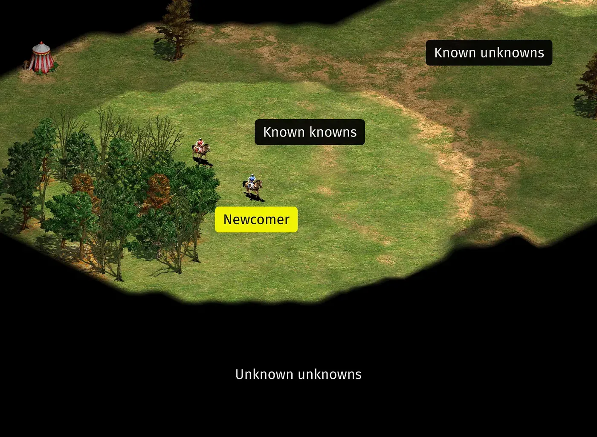

Питання «Чому існує світ?» може захопити будь-кого — як маленьку дитину, так й Нобелівського лауреата. Це одна з найцікавіших таємниць з усіх можливих, масштабна та водночас тривожно інтимна. Ніби як на початку анекдоту, в її дослідженні найчастіше зустрічаються філософи, фізики та священники. Деякі відкидають її як безглузду, в той час як інші дивуються їй все життя.
Джим Голт, письменник та популяризатор науки, віддав цій таємниці цілу книгу. В 2025 році її переклали українською, тому я вирішила її прочитати. Голт описує історію постановки людством питання про те «чому існує щось, а не ніщо?», розповідає про різні сучасні думки навколо нього, а також про свої власні емоційні стани під час цих досліджень.
Він переказує свої розмови про причини існування світу з різними людьми, серед яких — математик Роджер Пенроуз, письменник Джон Апдайк (культовий роман якого теж щойно переклали українською), фізик та батько квантового обчислення Девід Дойч та філософ Дерек Парфіт.
Бувають моменти, коли розпочате дослідження здається Голту позбавленим сенсу, а також коли воно дивує до глибини души. В будь-якому разі, він приходить до висновку, що воно не може бути відокремленим від людини, яка його здійснює, разом з її характером та настроями. Іноді це питання співзвучно питанню «Чому існую я?», але все-таки не тотожне йому.
Письменниця та лауреатка Пулітцерівської премії Катрін Шульц писала в одній з найкрасивіших рецензій, яку я читала в житті: «Задоволення від цієї книги полягає у спостереженні за матчем: приголомшливо винахідливий людський розум вигадує свої фантастичні припущення, Всесвіт холоднокровно повертає кожну подачу».
Можливо, ми ніколи не дізнаємось результати цього матчу між нашою цікавістю та найбільшою таємницею Всесвіту. Шульц закінчує рецензію так: «[книга «Чому існує світ?»] робить те, що має робити справжнє наукове письмо: вона допомагає нам відчути всю повноту проблеми. Це книга, яка закінчується, буквально і переносно, непрозорістю. Голт перетинає міст, вночі, курить сигарету — цей крихітний артефакт людської винахідливості, що викликає залежність і сяє. В акті громадянської безвідповідальності, але інтелектуальної бравади, він нахиляється і дозволяє їй упасти в темряву. Вона падає, як останнє питання: скільки ми освітимо, перш ніж згаснемо?»
Я не бачила кращих спроб описати це питання популярною мовою, з гумором та особистим життєвим контексом. Хоча місцями воно все таки відчувалось задроцьким, навіть за мірками мого філософсько-бакалаварського мозку, книга все одно прекрасна: 8,5/10.
Конспект історії постановки питання по Голту
- Космогонія у народних міфах завжди починалась з чогось. Наприклад, у грецьких філософів, світ був побудований первинним матеріалом, який існував вічно. У різних філософів були різні кандидати на такий матеріал — вода, вогонь або більш абстрактний “апейрон”. Ідея того, що ніщо передувало цьому матеріалу, а тому світ мав мати момент створення або причину, була немислима.
- Десь у 2-3 століття н.е. отці церкви запропонували нову радикальну космогонію. Світ почав своє існування виключно завдяки творчому слову бога, якому не потрібен був жодний матеріал. Цей хід дав можливість помисли ніщо як реальну онтологічну можливість. І це дало можливість поставити питання чому існує світ, а не цілковите ніщо?
- Це питання вперше поставив Ляйбніц у 1714 році, колу йому було 68 років. Ляйбніц запропонував «принцип достатньої підстави»,згідно з яким існує пояснення для кожного факту, отже факт існування світу має мати пояснення.
- Г’юм та Кант не погодились з Ляйбніцом — існування обʼєктів не може бути гарантовано лише частою логікою, а пояснення існування світу веде лише до хиби та непослідовності. З ними погоджувались деякі відомі філософи згодом. Але були також і ті, хто все одно дивувався цим питанням, наприклад Анрі Бергсон («я хочу знати чому існує світ») та Людвіг Вітґенштайн («містика полягає в тому не який світ, а в тому, що він є»).
- Тим часом, більшість науковців були переконані, що світ вічний, у нього не було початку. Серед них Коперник, Галілей та Ньютон. Навіть Ейнштайн був переконаний, що світ вічний і незмінний. Хоча саме з його теорії відносності у 1927 році Жорж Леметер та Едвін Габбл вивели та довели розширення Всесвіту, та прийшли висновків, що світ мусив мати раптовий початок.
- Церковники тішилися відкриттю, в той час як багато науковців бідкалися. У 1950-х космолог Фред Гойл сказав, що «вибух — недостатньо гідний спосіб появи світу, ніби дівчина вистрибує з торта на вечірці». Він ж придумав термін «великий вибух», який згодом прижився.
- Через відкриття «великого вибуху» питання «Чому є щось, а не ніщо?» стало складніше ігнорувати. Метафізика знову стала популярна, а один з філософів яких вона найбільше цікавила Роберт Нозік написав, що: «людина яка пропонує не дивну відповідь на це питання, демонструє, що вона не зрозуміла питання».
Цитати з книги, які хочу зберегти
Про таємницю
- «Добро, краса, математичні обʼєкти, логічні закони – це не щось тією ж мірою, якою чимось є ментальні та матеріальні явища. (…) Чи можуть вони відігравати певну роль у поясненні того чому є щось, а не ніщо?»
- «Нам часто кажуть, що ясне світло науки скасувало таємницю, залишили лише логіку та раціональність, – писав Гакслі. – Але це зовсім не так. Наука скинула темну завісу таємниці з багатьох явищ, принісши людству значну користь, але вона зіштовхує нас із головною та універсальною таємницею – таємницею існування… Чому світ існує? Чому наповнення світу є таким, яким є? Чому воно має ментальні, субʼєктивні аспекти і водночас – матеріальні, об’єктивні? Ми не знаємо… Але ми повинні навчитися це приймати, а також приймати його й наше існування як одну фундаментальну таємницю» (цитата з Julian Huxley, Essays of a Humanist, 1969, р. 107-108)
Про закони фізики та що вони пояснюють
- «[закони фізики] не ширяють над світом і в жодній формі йому не передують. Натомість вони є лише найзагальнішим можливим результатом патернів подій у світі. Якщо так, то планети обертаються навколо Сонця не тому, що “підпорядковуються” законові тяжіння; натомість закон тяжіння резюмує загальний патерн в природі»
- «Тоді як ці закони можуть щось пояснити? Можливо, вони й не можуть. Так думав Вітґенштайн. “Весь сучасний світогляд грунтується на хибному уявленні, що так звані закони природи є поясненнями її явищ. Тож сучасні люди дивляться на закони природи як на щось непорушне, як стародавні – на Бога та долю”» (Голт цитує Вітґенштайна з Логіко-філософського трактату, 1921)
Про особисту ідентичність
- «Самість, використовуючи аналогію Г’юма, – наче нація; або використовуючи аналогію Парфіта, наче клуб. Ми можемо простежити її ідентичність між певними моментами. Але питання чи залишається вона тією ж самою довго або після великих фізіологічних та психологічних перерв, є невизначеним і навіть порожнім» / «Постійна самість є чимось вигаданим, тінню, яку відкидає займенник “Я”»
- «Відчуття того, що реальність залежить від мого існування, є соліпсичною ілюзією, і я це знаю. Та навіть якщо її визначити такою, воно міцно мене тримає в лабетах. Як я можу послабити її пута? Можливо, твердо дотримуючись думки, що світ щасливо існував багато тисячоліть перед тим малоймовірним моментом, коли я раптово постав із ночі несвідомості, і він і далі буде існувати після неуникненної миті, коли я повернуся в ту ніч знову»
Картинка: Мем з блогу Design Bridges про важливість онбордінгу. Мені він подобається також в контексті роздумів про причин існування світу.